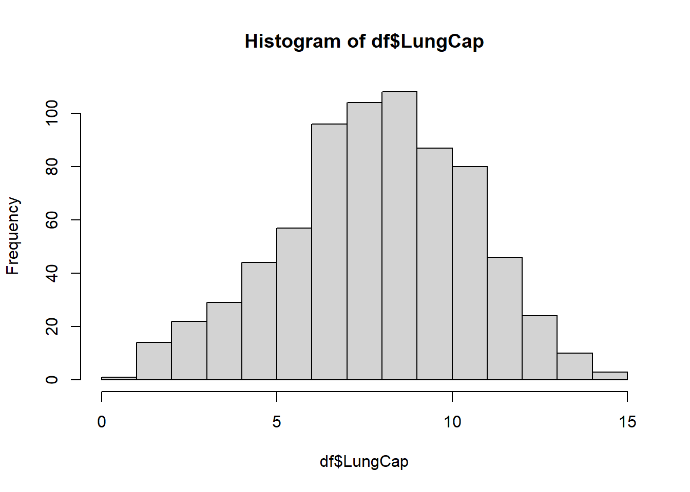

Code
library(readxl)
df <- read_excel("_data/LungCapData.xls")First, let’s read in the data from the Excel file:
library(readxl)
df <- read_excel("_data/LungCapData.xls")The distribution of LungCap looks as follows:
hist(df$LungCap)
The histogram suggests that the distribution is close to a normal distribution. Most of the observations are close to the mean. Very few observations are close to the margins (0 and 15).
boxplot(LungCap~Gender, data = df)
From the boxplots for gender above, we can see that males seem to have (slightly) higher lung capacity than females.
aggregate(data = df, LungCap~Smoke, mean) Smoke LungCap
1 no 7.770188
2 yes 8.645455The mean lung capacity for smokers and nonsmokers seems to be higher for smokers. This does not make sense as we generally expect smokers to have a reduced lung capacity due to the damage from smoking.
df_ageGroups <- mutate(df, AgeGroup = case_when(Age <= 13 ~ "13 and below", Age == 14 | Age == 15 ~ "14 to 15", Age == 16 | Age == 17 ~ "16 to 17", Age >= 18 ~ "18 and above"))Error in mutate(df, AgeGroup = case_when(Age <= 13 ~ "13 and below", Age == : could not find function "mutate"ggplot(df_ageGroups, aes(x = LungCap)) +
geom_histogram() +
facet_grid(AgeGroup~Smoke)Error in ggplot(df_ageGroups, aes(x = LungCap)): could not find function "ggplot"We see non-smokers to have a higher lung capacity than smokers, as expected.
Lung capacity seems to be directly proportional to age and after breaking down the data by age groups, we see that the lung capacities for non-smokers are higher than those of smokers in the same age group (except for less than or equal to 13). This could be because of the total number of observations in each age group. The age group less than or equal to 13 has the highest number of observations - thereby skewing the results (here, mean) for the entire distribution.
cor(x= df$LungCap, y = df$Age)[1] 0.8196749cov(x= df$LungCap, y = df$Age)[1] 8.738289Lung capacity seems to be positively correlated with age i.e., as age increases, lung capacity increases. Same is the case with covariance.
a <- 160/810The probability that a randomly selected inmate has exactly 2 prior convictions is 0.1975309.
b <- (128+434)/810The probability that a randomly selected inmate has fewer than 2 prior convictions is 0.6938272.
c <- (128+434+160)/810The probability that a randomly selected inmate has 2 or fewer prior convictions is 0.891358.
d <- (64+24)/810The probability that a randomly selected inmate has more than 2 prior convictions is 0.108642.
e <- (0*(128/810)) + (1*(434/810)) + (2*(160/810)) + (3*(64/810)) + (4*(24/810))The expected value for the number of prior convictions is 1.2864198 or 1, as the number of convictions cannot be a float.
var_0 <- ((0-e)^2) * (128/810)
var_1 <- ((1-e)^2) * (434/810)
var_2 <- ((2-e)^2) * (160/810)
var_3 <- ((3-e)^2) * (64/810)
var_4 <- ((4-e)^2) * (24/810)
var <- var_0 + var_1 + var_2 + var_3 + var_4
sd <- sqrt(var)For prior convictions, the variance is 0.8562353 and the standard deviation is 0.9253298.